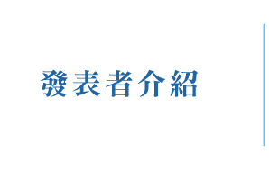
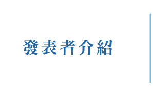

發表者介紹 /
場次1：靚靚六堆
《新編「六堆客家鄉土誌」》纂修計畫
場次2：靚靚六堆
高屏客家聚落人文資源建置及數位化應用
靚靚六堆總計畫
場次3：浪漫台三線
桃園浪漫臺三線客家文化帶與客家發展
107客家電子報
台三線「人文敘事與創新旅遊」整合型計畫暨課程開設
場次4：女性/資料庫建置
源客家的女性祖先崇拜：以長汀嚴婆信仰為例
乾隆年間客家移民的身體、情慾與日常生活
四重溪流域福佬客婦女的親屬關係實踐
台灣「客家」女性視覺藝術：女人、族群與生命歷程的書寫論述Ⅲ
浪漫台三線--客語地景詩網頁建置與意象探討
南投客家文化重點發展區百工行業詞調查及語料庫建置
場次5：族群/社團
重構台三線地方與族群的再想像
亞洲客家社團組織的比較：結構、功能與網絡
場次6：文化資產論述
客茶薪傳：酸柑茶文化生技與市場定位整合分析計畫
雲林縣詔安客家生態博物館的建構總計畫
論觀光發展、文化認同與文化遺產保存：以臺灣六張犁林氏客家族群發展與新瓦屋客家文化保存區為例
東勢客家文化園區旅遊服務提升之經濟效益評估
場次7：靚靚六堆vs浪漫台三線
高屏六堆客家地區休閒、文創、教育與文化脈絡與在地連結之整合研究
臺三線客家文化深耕與地方產業創新鏈結之研究
場次8：客家語言
臺灣客語語言資源調查比較研究(一)
響應式網站為架構建置醫護客語辭庫發音教學平台
桃園客家庄客語分類詞使用研究—維持、轉換與丟失
場次9：媒體推廣
誰是「典型客家人」：以客家新聞雜誌的論述形構為例
藝遊臺三線─「客戲一夏」客家戲曲夏令營之教學推廣策略研究
客家村的新節慶: 鳳林百鬼夜行的地方意義
網路媒體科技時代的客家族群形象認知與自我歸類認同
大數據分析下的客家料理
臺灣客家平面媒體之客家意象分析-以客福簡訊為例
場次10：學生專題
客家作家李喬與莊華堂的平埔書寫比較研究
關鍵時客（LINE一客）
外籍配偶對客家文化的適應與衝擊
宗教觀光與客家文化傳承：馬來西亞柔佛古廟遊神與苗栗火旁龍的比較
馬來西亞客家庄之飲食文化調查-以新堯灣老街為例
場次11：通識課程
「好客之家—認識臺灣客家」通識課程計畫
通識課程「客家藝術與文化」之成果分享
醫護客語計畫
客家音樂與戲劇賞析通識課程計畫
「台灣客家文化」通識課程
「哈客新戲劇賞析」通識課程之開設
「客家歷史與文化」客家通識課程計畫
「客家文化創意產業」課程介紹
客家文學、田野調查與客語認證課程
開南大學通識教育中心客家主題課程開設計畫
「客家文化與生命禮俗」通識選修課程計畫
悅閱客家─客家文學入門
「客家社會與文化」通識課程課程摘要
六堆慢食文化體驗
場次12：其他議題
城鄉、性別與階級交織下的客家老人照顧及長照資源利用情形
土地財政與公共治理:北部客庄縣市的比較(1992-2015)
日治時期新竹地區蕃地拓殖過程與原客關係
客家藍衫創新設計研究
創意客家: 尋找都市生活的新意義
計畫摘要
開設客家通識課程「客家社會與文化」計畫
現代客家山歌與流行音樂傳播策略之研究
中堆觀光行銷之遊程設計分析
「客家文化融入敘事力」通識課程計畫
《客英大辭典》諺語資料庫建置與研究計畫
「哈客文化同樂社 - 先鋒少年創意傳承」計畫
客家史料的典藏與重生：以植松明石於新埔坊寮客家庄的調查為基石
客家地區外籍配偶的婚姻移民特性萬巒、內埔為例
「走讀客家-浪漫台三線」通識課程執行計畫
「臺灣客家文化概論」通識課程計畫